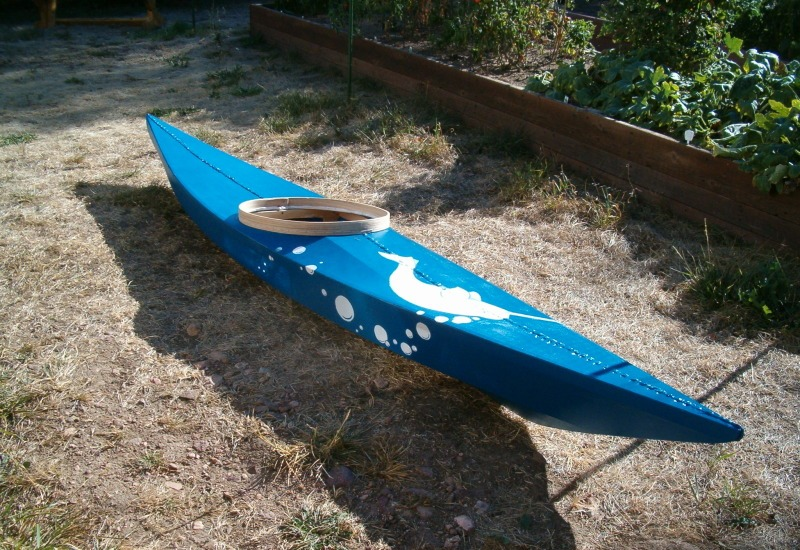

| Kids Kayak by Dave Gentry (US) | Menu Previous Page Next Page |
|

Dave, from Boulder, Colorado has completed a kids kayak based on a traditional Disco Bay design and a Sea Flea. The boat is 10' X 18" and weighs 14 lbs.
The frame is lashed and glued cedar with a polyester skin coated with rustoleum paint. The coaming is bent ash. It took 4 days, part time,
to construct the frame, and about 2 full days to skin and paint it. Total cost was about $63, most of that being the skin and paint.
|
|